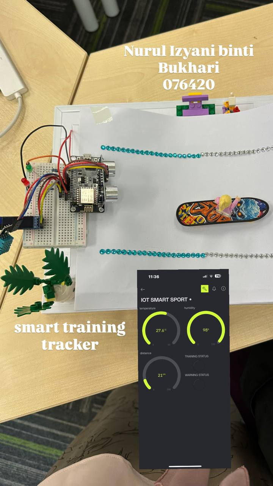
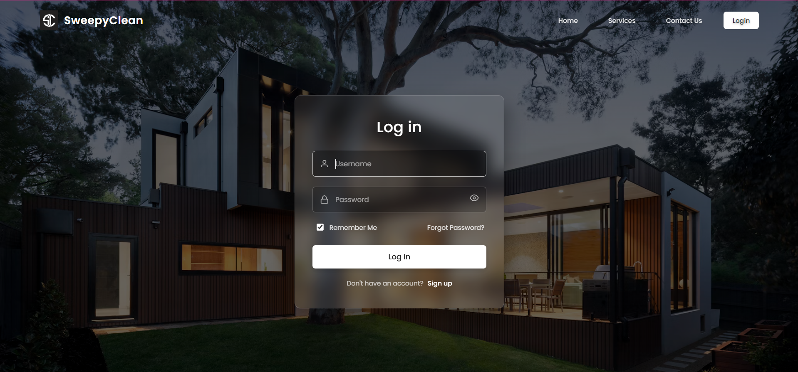

Library Management System
A digital web application designed to streamline library operations, allowing administrators to track book inventories, manage student borrowings, and automate overdue fine calculations efficiently.
A showcase of my software development work, academic systems, and IoT implementations.
A digital web application designed to streamline library operations, allowing administrators to track book inventories, manage student borrowings, and automate overdue fine calculations efficiently.

An Internet of Things (IoT) system engineered to monitor physical training metrics in real-time. It integrates hardware sensors to gather performance analytics and syncs data seamlessly with a web dashboard for review.

A smart web-based home cleaning service management platform built using PHP and MySQL. Features automated scheduling, service allocation, and customer management structures tailored for modern workflows.